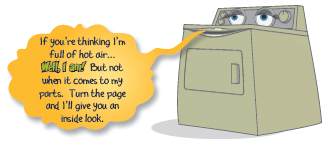

“Drying machines haven’t really changed much over the years. That is, with the exception of the addition of electronic sensors on newer models today. (Which make us a lot smarter than those older dryers.)”
“You can’t just stick clothes into a box like an oven and heat them dry. So, we have a drum that you tumble the clothes over and over in. The dryer is powered by a motor and you use a belt from the motor to turn the drum.”
“The air is heated with either electricity, using a heater element , or with gas, using a burner. Next, the air is pushed through the wet clothes by using a blower wheel. This warm air passes through a filter, is vented out of the dryer, and then out of the building the dryer is in.”
“You’re probably wondering how we know when your clothes are ready? Well, to tell that the clothes are dry, we have a thermostat to sense the air temperature inside the drum called an operating thermostat. When the air inside our drum is approximately 150 degrees Fahrenheit, the clothes are considered to be dry.”
“If the operating thermostat were to malfunction, the dryer would continue to heat. If the dryer continues to heat up, the dryer (and your house!) can burn up. So, to stop this, there is an additional thermostat, located near the source of the heat called the safety thermostat. I once knew an old dryer without a safety thermostat, and he was one hot head, if ya know what I mean.”
“You’re probably glad that we don’t dump your clothes onto the floor when you open the door. It’s a good thing that we have a handy little part called a door switch. The door switch stops the dryer when the door is opened.” “Finally, the real ‘brains of the operation’, if you will, is the part that controls all the operations of the dryer...the timer.”
